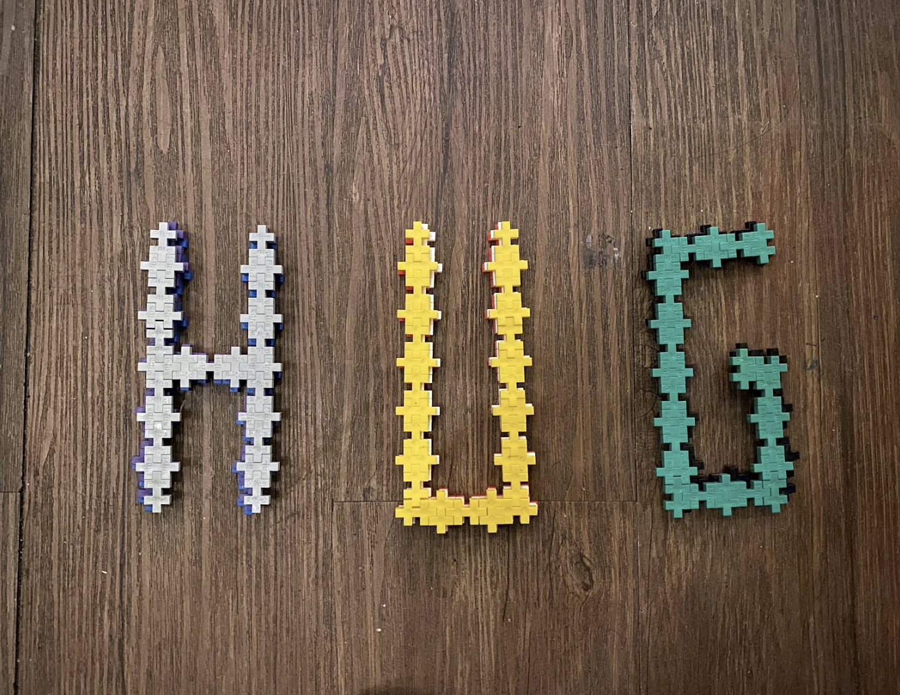
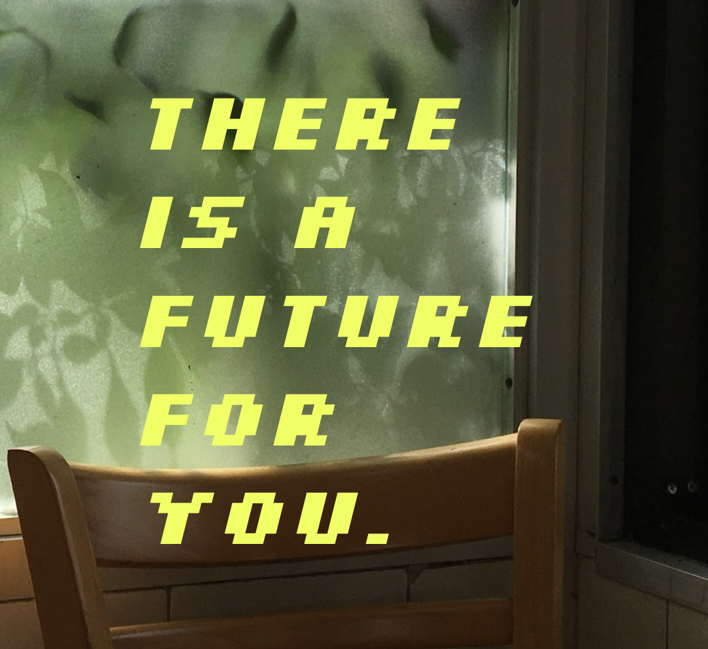
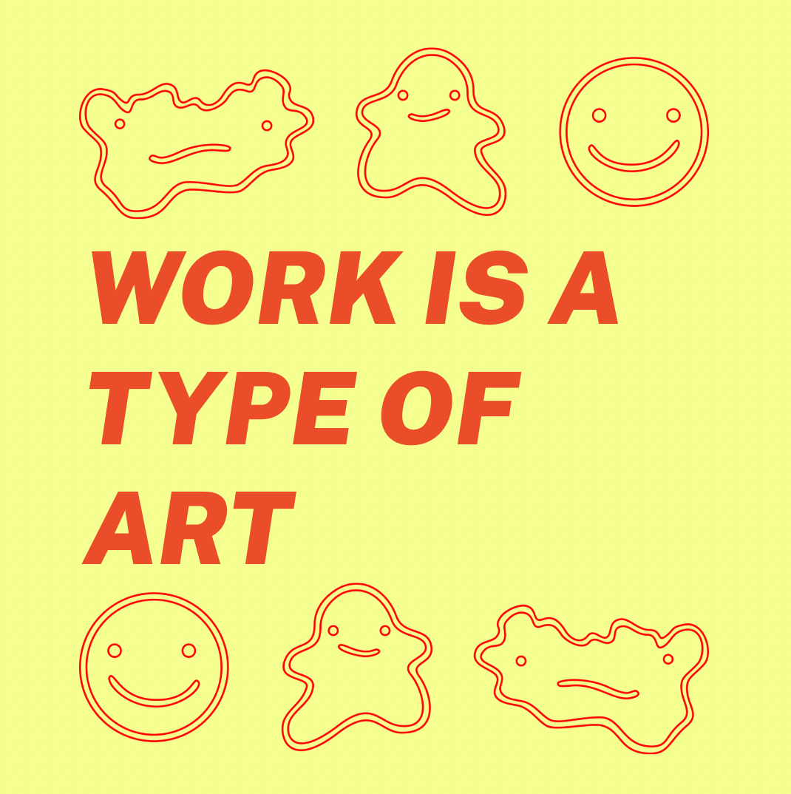
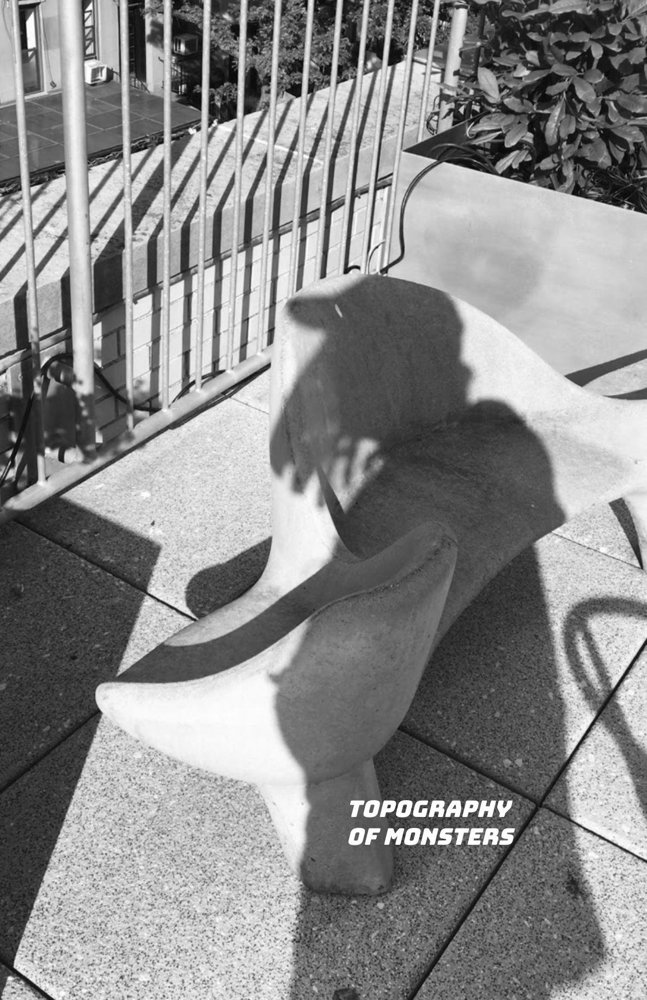

Writing
Selections from the New Haven Independent (from over 100 articles):
Julia Roberts, Ayo Edebiri Crash An On-Screen Elm City
Louise Mandumbwa Recognizes the Person She Loves
Fred White Gives Deadwood Another Chance At Life
T!LT Hates The Indy
Overheard at the Zine Scene
Quick to the Cut
New Single Processes Dive Bar Encounter
Gen Alpha Speaks: Cereal, Then Milk
Zines:



